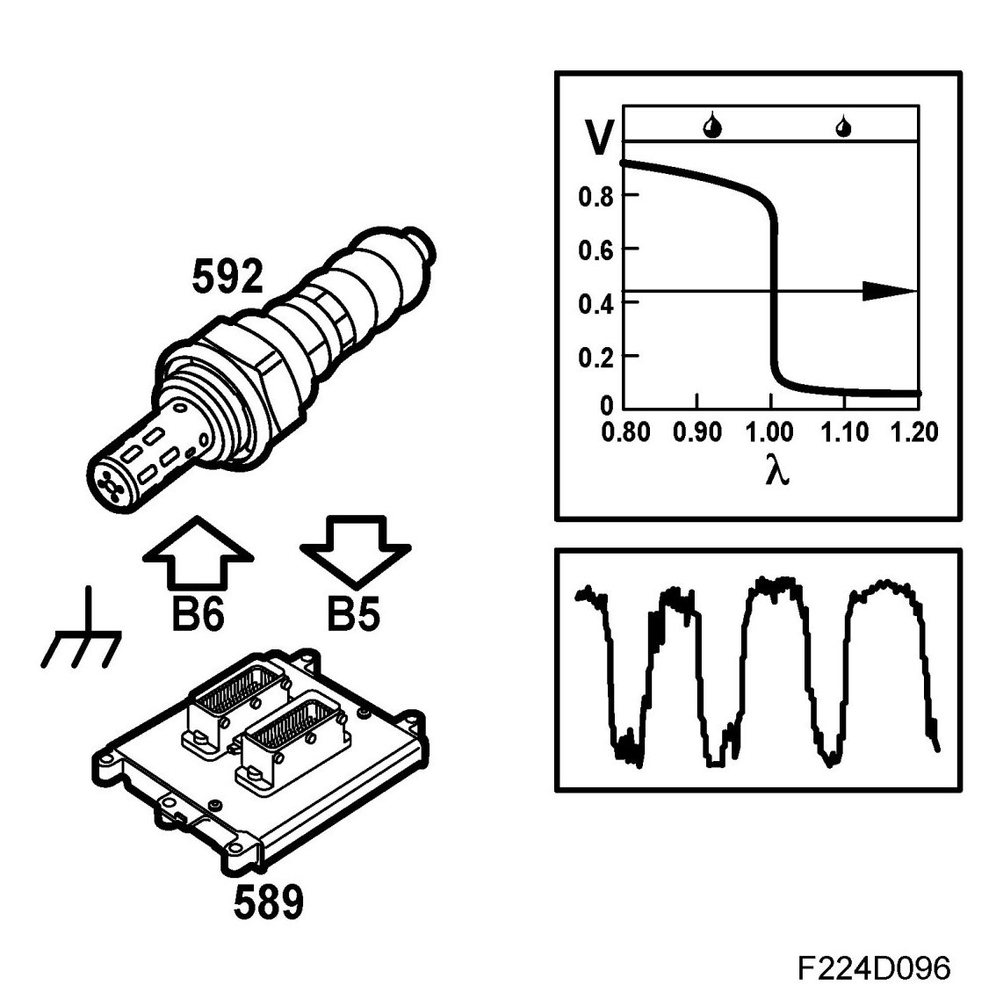
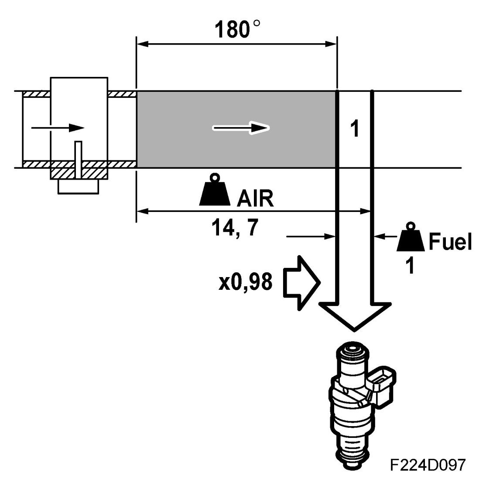
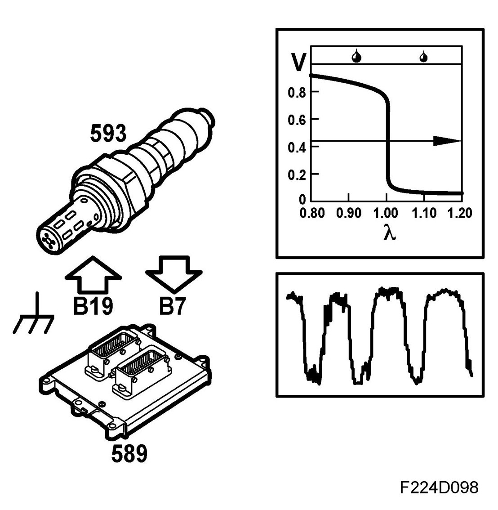
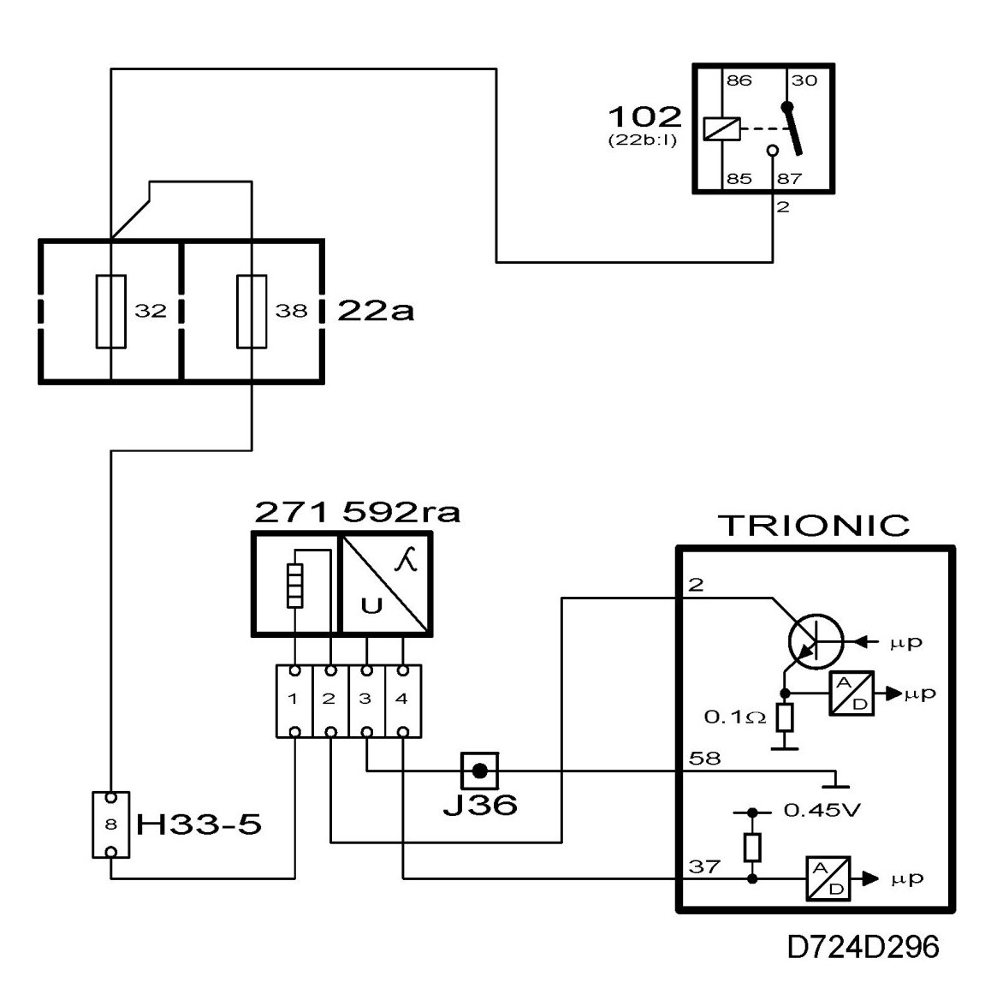

Closed Loop
Closed Loop
Front heated oxygen sensor

The basic fuel quantity has been calculated to give an air/fuel ratio of 14.7:1. The calculation is based on the reading obtained from the mass air flow sensor. Air leaks and tolerances in the mass air flow sensor can affect this calculation. When the fuel quantity is subsequently converted into injection duration, the control module assumes the flow through the injectors to be functioning faultlessly. Tolerances in the injectors and variations in the fuel pressure can affect this calculation.
For optimum operation, the catalytic converters require an air/fuel ratio of exactly 14.7:1. Therefore, the system is fitted with oxygen sensors before and after the front catalytic converter, the front one called oxygen sensor 1 or O2S 1. The oxygen sensor is connected to control module pin 5(B) and is grounded from control module pin 6(B).
In order to supply a voltage quickly after starting, the oxygen sensor must be preheated. The preheating is supplied with B+ from the fuel pump relay via fuse 3 and is grounded via control module pins 40(B) and 57(B)9. The preheating circuit ground is PWM so that the preheating effect can be regulated.
The control module estimates the exhaust temperature based on load and engine speed. At high exhaust temperatures, preheating is disengaged so that the oxygen sensor is not damaged.
When the exhaust gases pass the oxygen sensor, their oxygen content is measured by a chemical reaction. The oxygen sensor output voltage is proportional to the current oxygen content. The oxygen content describes the composition of the fuel/air mixture. If the engine has a richer mixture than normal (lambda less than 1), the oxygen sensor output voltage will be about 0.9 V. If the fuel mixture is leaner than normal (lambda over 1), the sensor output voltage will be about 0.1 V.
The sensor voltage changes very quickly when lambda passes 1.
The closed loop correction factor is 1.00 when the system is not active. As soon as the closed loop system is activated, the oxygen sensor voltage is allowed to influence its correction factor. If the oxygen sensor produces a voltage of less than 0.50 V, the correction factor will be slowly increased. Conversely, the correction factor will be slowly decreased if the oxygen sensor output voltage exceeds 0.50 V.
The correction factor limits are 0.75 and 1.25 respectively.
The diagnostic tool always shows 0% when closed loop is not active, 25% when the correction factor is 1.25 and -25% when the correction factor is 0.75.
The following conditions must be fulfilled for closed loop to be engaged:

- Engine speed above 500 rpm.
- The engine must have performed 25-200 revolutions since starting. The value is dependent on coolant temperature.
- The oxygen sensor voltage must have passed below 0.3 V or above 0.6 V at some time since starting.
- At idling speed, the engine coolant temperature must have exceeded approx. -10 - +30 degrees C, depending on the starting temperature.
- Under conditions of partial load, the engine coolant temperature must have exceeded approx. -10 - +30 degrees C, depending on the starting temperature.
- Fuel compensation for knocking or high load must not take place at the same time.
- Engine load above 50 mg/c.
- No fuel compensation for load changes when the engine coolant temperature is below 40 degrees C.
Rear heated oxygen sensor


To be able to diagnose the front catalytic converter, there is an oxygen sensor mounted after it in the exhaust system. This sensor is called oxygen sensor 2 or O2S 2 and is connected to control module pin 7(B) and grounded from control module pin 19(B).
In order to supply a voltage quickly after starting, the oxygen sensor must be preheated. The preheating is supplied with B+ from the fuel pump relay via fuse 3 and is grounded via control module pins 61(B) and 62(B). The preheating circuit ground is PWM so that the preheating effect can be regulated.
Preheating is activated as soon as the engine coolant temperature exceeds 50 degrees C.
The control module estimates the exhaust temperature on the basis of engine load and speed. If the exhaust temperature is high, preheating will be disconnected to prevent damage to the sensor.
If the catalytic converter is damaged, its ability to absorb oxygen will deteriorate. The normal fluctuations of the closed loop will then be detected by the voltage from oxygen sensor 2 and a diagnostic trouble code will be generated. The diagnosis is performed once per driving cycle.
In addition to the catalytic converter diagnosis, the oxygen sensor value is also used to correct the closed loop for minor faults in oxygen sensor 1.
Optimum emission values are obtained when the voltage from oxygen sensor 2 is 0.6V.
If the voltage is 0.3V, for example, the engine is running slightly lean. The closed loop correction factor will then be held in the rich setting for a certain number of combustions before oxygen sensor 1 is allowed to affect the value again.